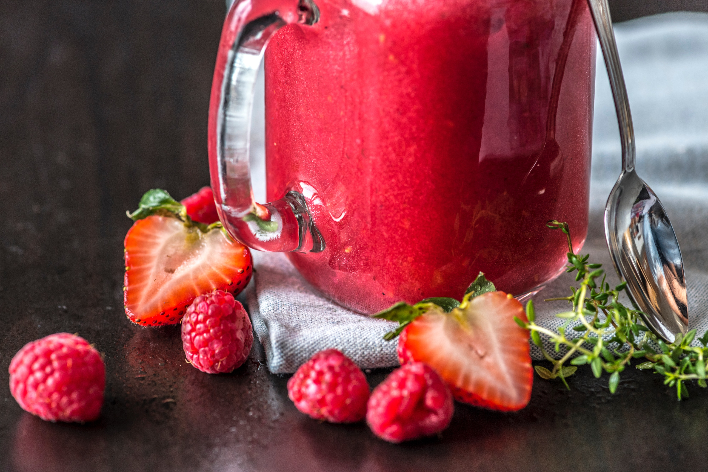

Kelsey's Best Berry Smoothie

Description
A refreshing smoothie bursting with berry flavor! Avocado
adds some potassium, Greek yogurt brings some protein, and crushed ginger and
fresh mint leaves add a bit of zip. Excellent for hot afternoons. Bonus points
for snagging mint leaves from your own herb garden.
Ingredients
- 1.25 cups frozen strawberries
- 0.75 cups frozen raspberries
- 0.33 cups frozen avocado chunks
- 0.5 cups 2% plain Greek yogurt (or yogurt of
choice)
- 0.5 cups 2% lactose-free milk (or milk substitute
of choice)
- Generous drizzle of honey
- Dash of vanilla extract
- 1 tsp crushed ginger (I prefer the pre-portioned
frozen cubes from Trader Joe's freezer section)
- 4 fresh mint leaves, rinsed
Steps
- Add frozen fruits, ginger and mint leaves to
blender cup.
- Drizzle honey over fruit in cup and tip in a dash
of vanilla extract.
- Measure out yogurt and add to the blender cup. Then
use the same measuring cup to measure out the milk and add to the blender cup
(this will help get out any yogurt still sticking to the measuring cup and
blender cup sides).
- Blend using blender's Extract setting (or
equivalent). If there are still solid pieces of fruit after the cycle runs, run
it a second time.
- Enjoy!